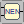
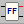
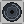
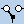
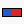
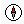
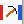

La barre des composants se trouve en haut du panneau. Choisissez-y un composant, puis placez-le d’un clic sur le panneau. Si la fenêtre est trop étroite pour tous les boutons, les autres boutons passent sur une deuxième rangée.
Les composants sont répartis en trois groupes, de gauche à droite dans un circuit : entrée → traitement → sortie.
| Bouton | Nom | Que fait-il ? |
|---|---|---|
| Connexion | Active ou désactive le mode fil. Voir Connexions. |
Les entrées se trouvent dans le groupe Alimentation : l’interrupteur ou le bouton-poussoir, le commutateur va-et-vient, la LDR, la CTN, le générateur d’impulsions et l’interrupteur DIP, avec des bornes entre le rail + et l’entrée. Les anciennes entrées sans bornes (voir Entrées) ne sont plus dans la barre.
| Bouton | Nom | Qu’est-ce que c’est ? |
|---|---|---|
 | Porte ET | Sortie active si toutes les entrées sont actives. |
 | Porte OU | Sortie active si au moins une entrée est active. |
 | Porte NON | Inverse le signal. |
 | Porte NON-ET | Sortie éteinte si les deux entrées sont allumées. |
 | Porte NON-OU | Sortie allumée si les deux entrées sont éteintes. |
 | Porte OU-X | Sortie allumée si exactement une entrée est allumée. |
 | Bloc compteur | Compte les impulsions et transmet la valeur en binaire. |
 | Bascule | Mémorise un bit (SR, D, JK ou T). |
 | Compteur de pas | Compte les impulsions jusqu’à 9999 et affiche la valeur. |
 | Chronomètre | Mesure le temps (MM:SS) tant que S est actif ; Q s’active à l’heure de fin. |
 | Bloc mémoire | Transmet le contenu d’un emplacement mémoire choisi. |
| Bouton | Nom | Qu’est-ce que c’est ? |
|---|---|---|
| Lampe | S’allume quand l’entrée est active. | |
 | Relais | Montre comment un contact bascule quand la bobine est alimentée. |
 | Buzzer | Sonne quand l’entrée est active. |
| Moteur | Tourne à gauche (entrée L) ou à droite (entrée R). | |
 | Afficheur 7 segments | Affiche un chiffre ou une lettre. |
 | Voltmètre | Affiche la tension, par exemple 3,3 V. |
 | Milliampèremètre | Affiche le courant en mA ; visible seulement si les boutons de l’alimentation sont activés. |
| Wattmètre | Affiche la puissance en W de tout ce qui suit ; visible seulement si les boutons de l’alimentation sont activés. | |
 | Oscilloscope | Trace la tension entre + et − dans le temps. |
 | Personne | Marche vers la gauche (entrée L) ou la droite (entrée R) ; les fins de course S1 et S2 indiquent où elle se trouve. |
 | Chariot | Roule en avant (entrée V) ou en arrière (entrée A) sur une route sinueuse ; Start, Finish et Tel (une impulsion à chaque poteau) indiquent où il se trouve. |
 | Boîte à musique | Clavier de 8 touches de piano (do à do'), une entrée par touche : active, la touche s’allume et la note sonne. |
 | Feu tricolore | Feu pour voitures (rouge, orange, vert) avec un feu piétons ; cinq entrées, comme UIT0 à UIT4 de LogicRun. |
 | Barrière | Barrière de parking ; l’entrée O ouvre la barrière, fins de course Fermée et Ouverte. |
| Bouton | Nom | Qu’est-ce que c’est ? |
|---|---|---|
 | Rail + | Rail d’alimentation pour les entrées ; la tension vient de la source. |
 | Rail − | Rail de masse (0 V) pour les sorties. |
 | Source (batterie) | Source de tension de 0 à 12 V avec un curseur. |
 | Source alternative | Tension alternative jusqu’à 12 V crête, ralentie à 0,5, 1 ou 2 Hz. |
 | Fusible | Fond quand le courant est trop fort. |
 | Résistance (contact) | Contact ou fil avec une petite résistance : chute de tension U = I × R. |
 | Potentiomètre | Résistance avec un curseur et trois bornes (A, B et L) ; faites glisser le curseur avec la souris. |
 | LDR | Photorésistance ; réglez la lumière avec le curseur. |
 | CTN | Thermistance ; réglez la température avec le curseur. |
 | Diode | Ne laisse passer le courant que dans un sens (de A vers K), au-dessus de 0,7 V. |
 | Commutateur va-et-vient | Trois bornes : le milieu est relié à A ou à B. Deux commutateurs commandent une lampe depuis deux endroits (escalier). |
 | Générateur d’impulsions | Interrupteur qui s’ouvre et se ferme tout seul : impulsions de 0,5 à 5 Hz. |
 | Interrupteur DIP | Quatre petits interrupteurs : un nombre de 0 à 15 sur les sorties 8, 4, 2 et 1. |
| Transistor | NPN ou PNP à trois bornes (C, B et E) : Ic = β × Ib. | |
 | Aimant droit | Aimant avec un pôle nord (rouge) et un pôle sud (bleu), sans bornes. |
 | Boussole | Une aiguille qui s’oriente le long du champ magnétique. |
 | Plaque de lignes de champ | Montre les lignes de champ des aimants posés dessus, comme de la limaille de fer. |
 | Bobine | Bobine à spires dans le circuit : parcourue par un courant, elle devient un aimant. |
 | Clou | Un morceau de fer : un aimant ou une bobine parcourue par un courant l’attire. |
| Relais (modèle ouvert) | Une bobine sur un noyau, une armature avec un ressort et trois contacts : un relais vu de l’intérieur. | |
 | Balançoire électrique | Une tige de cuivre entre les pôles d’un aimant en U : avec un courant, elle s’écarte (force de Lorentz). |
 | Moteur électrique (modèle) | Une bobine qui tourne entre deux pôles, avec collecteur et balais. |
 | Galvanomètre | Galvanomètre à zéro central : montre le courant et son sens. |
 | Aimant tournant | Un aimant puissant sur un axe, comme dans une dynamo ; cliquez pour le faire tourner. |
| Transformateur | Deux bobines sur un noyau de fer : élève ou abaisse une tension alternative. |